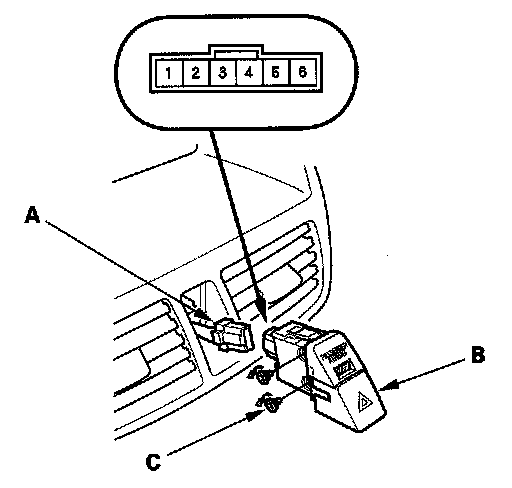

Hazard Warning Switch Test
Hazard Warning Switch Test1. Remove the center panel.

2. Disconnect the 6P connector (A) from the hazard warning switch (B).
3. Remove the hazard warning switch from behind the center panel.
4. Check for continuity between the terminals in each switch position according to the table.
5. If the continuity is not as specified, replace the bulb (C) or the hazard warning switch.